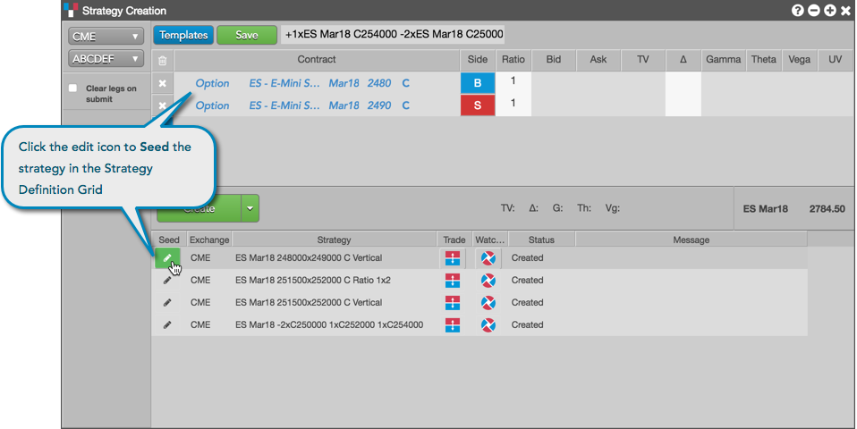
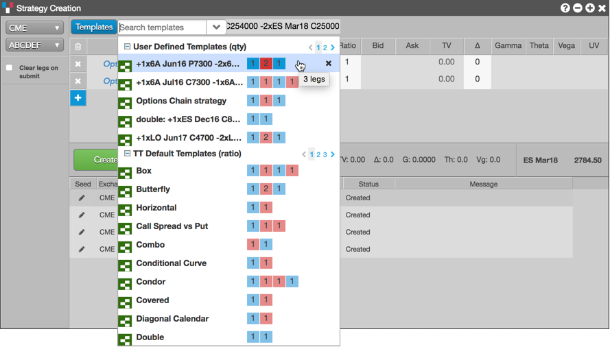

Some exchanges do not preserve user-defined strategies across trading sessions, so you need to create them if you want to use them. The Strategy Creation widget keeps the last 25 spreads you have created, so that you can modify and/or send them to the exchange without having to redefine them.
User-defined strategies created during the current trading session can be reloaded in the Strategy Creation widget and modified if needed. If modified, you can re-create the user-defined strategy as a new strategy.
There are two ways you can reload a strategy:
Click the icon in the Seed column for a strategy.

Click Templates and select a saved user-defined strategy (structure) in the User-Defined Strategies section of the Templates drop-down list.

To modify a strategy:
Reload the previously defined strategy that you want to modify.
Tip: Uncheck (disable) the Clear legs on submit option when creating a strategy to leave the legs in the strategy definition grid after the strategy is submitted.
Click the icon in the Seed column for a strategy in the execution report panel.
The legs of the strategy appear in the strategy creation pane.
To modify one or more legs, click the exchange, product type, product, and contract for each leg. For options legs, click Put (P) or Call (C) as needed. The instrument picker allows you to set each part of the contract separately by clicking a field and selecting a value.
Modify the Side, Ratio, and Price (if applicable) for the strategy leg.
A single click in the Side column toggles a leg to the opposite Buy/Sell direction, and you can adjust the Ratio of each leg if needed.
Click the text box to name the new, modified strategy if needed.
Click Create.
Tip: To save the modified strategy as a new user-defined strategy template, click Save in the strategy definition grid. The saved strategy appears in the Templates list.
To remove a strategy from the execution report panel, right-click the strategy and click Delete from the context menu.